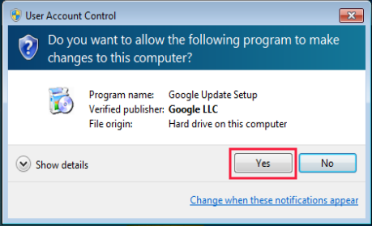

Instalasi Pendukung Internet Banking
Agar dapat bekerja, modul Internet Banking di OtomaX membutuhkan beberapa software pendukung, yaitu Internet Explorer versi 11, Transport Layer Security (TLS) v1.2 untuk modul BNI, BRI dan Mandiri, serta Google Chrome, Chrome Driver, Selenium WebDriver untuk modul Mandiri Online dan Mandiri Bisnis. Adapun modul BCA bisa bekerja tanpa software pendukung.
Install Internet Explorer versi 11
Pertama, install Internet Explorer versi 11 sebagai berikut:
- Download Internet Explorer versi 11 klik disini.
-
Cari file hasil download, klik 2x dan kemudian klik tombol Install.

-
Tunggu proses instalasi.

-
Instalasi selesai, klik tombol Restart now

- Setelah restart, buka Internet Explorer versi 11, tekan Alt + X pada keyboard, lalu pilih Internet Options.
- Klik tab Programs, klik tombol Make Default.
- Klik tombol OK dan kemudian tutup Internet Explorer.
- Selesai.
Catatan: Apabila Anda menggunakan Windows 7 pastikan telah Windows 7 SP 1 sebelum menginstall Internet Explorer versi 11; jikalau belum, download dan install Service Pack 1 (SP 1) terlebih dahulu klik disini.
Install Transport Layer Security (TLS) v1.2
Kedua, install Transport Layer Security (TLS) v1.2 sebagai berikut:
- Download Transport Layer Security (TLS) v1.2 klik disini.
-
Cari file hasil download, klik 2x, kemudian tunggu proses persiapan instalasi.

-
Klik tombol Yes.

-
Tunggu proses instalasi.

-
Instalasi selesai, klik tombol Restart Now.

Install Google Chrome
Ketiga, install Google Chrome sebagai berikut:
- Download Google Chrome, klik disini.
-
Cari file hasil download, klik 2x, apabila muncul jendela seperti di bawah ini klik tombol Run.

-
Apabila muncul jendela seperti di bawah ini klik tombol Yes.

-
Tunggu proses persiapan instalasi.

-
Tunggu proses instalasi.

-
Instalasi selesai.

- Masuk Local Disk (C): -> Program Files -> Google -> Update -> pada file GoogleUpdate ganti namanya menjadi GoogleUpdate_NoUpdate.
- Selesai.
Catatan: Jikalau sebelum mengikuti panduan ini Anda telah menginstall Google Chrome, uninstall dahulu lalu install ulang Google Chrome mengikuti panduan ini.
Install Chrome Driver
Keempat, install Chrome Driver sebagai berikut:
- Download Chrome Driver, klik disini.
- Cari file hasil download, extract dan kemudian copy serta paste file hasil extract di folder OtomaX lihat disini atau folder lokasi instalasi OtomaX Anda.
- Selesai.
Catatan: Jikalau sebelum mengikuti panduan ini Anda telah menginstall Chrome Driver, hapus dahulu lalu install lagi Chrome Driver mengikuti panduan ini.
Install Selenium WebDriver
Kelima, install Selenium WebDriver sebagai berikut:
- Download Selenium WebDriver, klik disini.
- Cari file hasil download, extract dan kemudian copy serta paste file hasil extract di folder OtomaX lihat disini atau folder lokasi instalasi OtomaX Anda.
- Selesai.
Selesai
Selanjutnya Anda dapat mensetting modul Internet Banking untuk masing - masing modul Bank, selengkapnya klik disini.